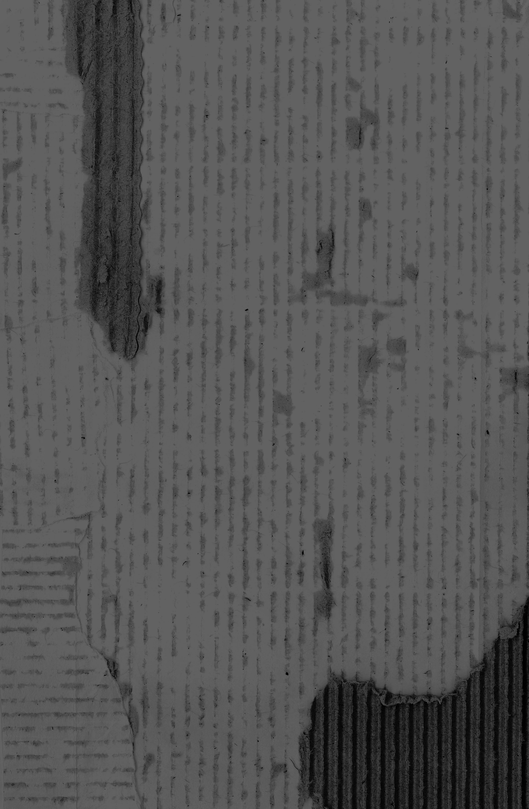

Di dove sei?
America
Be careful with… bag.
Lots of thieves here
Naples
Location:
Materials:
Journal entry
Being in Napoli so far has actually been a kind of surreal experience. I arrived close to dusk, so night was falling as I set out to explore and I could not shake the strangest feeling. Eventually I realized: Napoli, specifically the area I set out to explore first, feels so much like places I have been in my dreams. I think that's for a few reasons combined. Firstly, the city feels like somewhere dream anarchy reigns. There’s trash everywhere on the street, clothes hanging wherever with no regulation, ancient churches smushed next to döner kebab places, graffiti covering EVERY surface, NO observance of traffic laws whatsoever (people just walking in the middle of the road, motorcycles tearing through plazas to get around cars at red lights), children awake and running free everywhere at midnight, people yelling out their windows asking questions of their neighbors up two floors and across the street, families eating dinners in the middle of the street with their one-room apartment doors and windows wide open, maze-like tiny streets, all wires and satellite dishes exposed and stringing precariously between alleys… there was even a point last night at which someone just set off fireworks in the middle of the city and no one seemed to care. But the reason it felt like a dream is because all that did not feel strange to me. It felt totally normal, like how dream logic causes you to accept whatever you experience. This place is thoroughly chaotic, filthy, and electric. It doesn’t feel real because it reminds me so strongly of something like an alternate planet from a sci-fi series. It feels vaguely post-apocalyptic. Like the city of Ember or something. NO, BETTER – it’s Ankh-Morpork from the Discworld series. It feels surreal.
“C’è un posto dove la posso lavare?”

Naples 2
Location:
Materials:
Pizza box
Journal entry
Shopkeepers are usually pretty surprised when I speak to them in Italian, especially if I’m silent at first. For example, I bought an apple from a fruit stand close-ish to the train station and since it was loud my voice was a bit drowned out when I said I’d like the apple in Italian. The girl manning the stand conducted the rest of the interaction in silence, assuming, I could tell, that I wouldn’t be able to understand. Most shopkeepers around here do that – they point to euro totals on receipts and screens instead of saying them aloud, they use English words, etc. This particular girl was doing lots of pointing. She looked genuinely surprised when I then came out with “C’è un posto dove la posso lavare?” “Is there a place I can wash this?” She responded to me in Italian. That was a good moment.